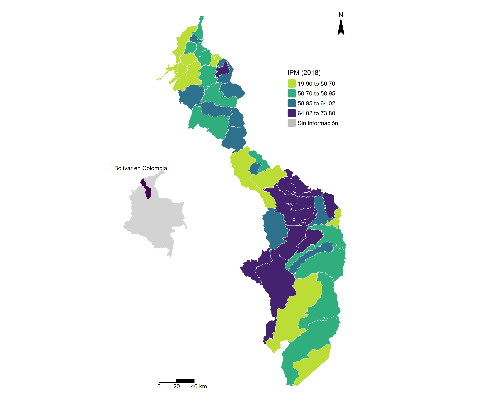

Relación entre ubicación geográfica y logro educativo
Estadística descriptiva y análisis exploratorio de datos (EDAED)
1 Introducción
Colombia cuenta con una vasta extensión que cubre más de 1.141.748 kilómetros cuadrados que la posiciona como el cuarto país más extenso de Suramérica (Cancillería, sf). Sus grandes dimensiones han llevado al país a buscar formas eficientes de organizar el territorio a partir de unidades administrativas más pequeñas. De esta forma fue que se dividió al país en cada uno de sus 32 departamentos, los cuales a su vez fueron divididos hasta alcanzar un total de 1103 municipios. Esta unidad administrativa básica a su vez puede ser clasificada en siete categorías diferentes en función de sus ingresos corrientes de libre destinación y de su número de habitantes (Función Pública, 2012). Si bien es cierto que una parte considerable de la población colombiana se encuentra concentrada en los municipios de más altos ingresos, esto no guarda una relación directa con la extensión de su territorio o su acceso a recursos naturales, mientras que la correlación con otras variables como el nivel educativo, el acceso a servicios básicos o el desempeño administrativo está aún por determinarse, lo que establece la necesidad de adelantar estudios que permitan caracterizar la realidad de los diferentes municipios al interior de cada departamento. En esta oportunidad se adelantará este trabajo para el departamento de Bolívar y sus municipios.
2 Objetivos
2.1 Objetivo general
Realizar un análisis descriptivo y exploratorio que permita contrastar la realidad de los 46 diferentes municipios que hay en Bolívar. Para ello se consultarán y contrastarán datos sobre los resultados de las pruebas Saber11 obtenidos por los estudiantes de cada municipio, el Índice Multidimensional de Pobreza y el Índice de Desempeño fiscal, así como la relación existente entre la distancia por vía terrestre entre cada cabecera municipal y Cartagena, la capital del departamento.
2.2 Objetivos específicos
Identificar el desempeño de las dos pruebas Saber11 realizadas en el año 2024 a partir del puntaje global obtenido por el municipio de educación del colegio de tal forma que sea posible estimar la calidad de la educación ofrecida en cada municipio del departamento de Bolívar y que no necesariamente se corresponde con el municipio de residencia de los estudiantes.
Establecer a través de una representación espacial del Índice de Pobreza Multidimensional una aproximación a las privaciones vividas al interior de cada municipio con el objetivo de entender a mayor profundidad las desigualdades existentes al interior del departamento.
Estudiar las diferencias en el desempeño fiscal que presentan los 46 municipios foco del estudio. A partir de este indicador se busca distinguir a aquellos municipios que presentan un buen manejo de sus recursos públicos de aquellos que presentan un rendimiento bajo.
Analizar la existencia y extensión de las vías terrestres existentes que conectan cada cabecera municipal del departamento con Cartagena. Adicionalmente, se buscará proporcionar explicaciones a las observaciones atípicas identificadas.
Usar las variables identificadas como insumo para tratar de explicar el desempeño académico obtenido en las pruebas Saber11 2023.
3 Metodología
Se partirá de la búsqueda de bases de datos proporcionadas por fuentes oficiales que contenga información sobre variables sociales que hablen de manera directa o indirecta del nivel de vida del que se goza al interior de cada municipio. Posteriormente, se buscará representar esta información con el objetivo de cruzar cada resultado con los demás, de manera que sea posible plantear hipótesis que exliquen la relación entre el desempeño académico y dichas variables.
4 Procesamiento de datos
4.1 Desempeño en Pruebas Saber11 (2024)
Se descargaron los resultados individuales (anonimizados) de la prueba Saber11 del primer y segundo semestre de 2024 desde el portal DataICFES. Los archivos estaban en formato .txt y fueron integrados en una sola base de datos, verificando que las variables tuvieran la misma estructura (nombre y tipo) en ambos semestres. Como primer paso, se filtraron los registros correspondientes a estudiantes del departamento de Bolívar. Aunque la base original incluía varias columnas con datos vacíos o faltantes, se construyó una versión depurada que conserva únicamente la información esencial: el identificador único del estudiante, el código DIVIPOLA del municipio de ubicación del colegio, el nombre del municipio y el puntaje global.
A pesar de las diferencias entre los estudiantes que presentan la prueba en el primer y segundo semestre, particularmente en Bolívar, donde en el segundo semestre predominan los egresados de colegios privados con calendario B, se optó por unificar ambas bases de datos (Cuencia, 2016). La decisión se basa en que todos los registros pertenecen al mismo universo: los estudiantes que culminan el bachillerato y presentan el examen Saber11 en 2024.
En la base consolidada se identificaron 68 registros (0,002%) sin código de municipio. Además, en todos esos casos el nombre del municipio también estaba vacío, por lo que no fue posible depurar los datos manualmente y se optó por eliminar dichas filas. Al final, se cuenta con una base de datos consolidada con 28.915 registros, correspondientes a los estudiantes de Bolívar que presentaron la prueba Saber11 durante el año 2024. Con esta base limpia, se calculó la media y la mediana del puntaje global por municipio de ubicación del colegio. La mediana se incluyó como medida complementaria, ya que es menos sensible a valores atípicos que la media.
4.2 Índice Multidimensional de Pobreza -IMP (2018)
Se descargaron los datos del Índice de Pobreza Multidimensional (IPM), de fuente censal, desde el portal del DANE. Este indicador se calcula con información del Censo Nacional de Población y Vivienda (CNPV) de 2018, complementada con otras fuentes oficiales, y permite medir las privaciones simultáneas en cinco dimensiones: educación, niñez y juventud, salud, trabajo, vivienda y servicios públicos, cada una con igual peso (20%) dentro del índice. Un hogar se considera multidimensionalmente pobre si presenta privaciones en al menos el 33,3% de los indicadores. Después de descargar los datos, se filtraron los registros correspondientes a los 44 municipios y 2 distritos del departamento de Bolívar.
Anualmente, el Índice de Pobreza Multidimensional (IPM) se calcula con base en la Encuesta de Calidad de Vida (ECV), una operación estadística nacional diseñada para estimar indicadores a nivel de país, departamento y áreas metropolitanas. Debido a su diseño muestral, no permite desagregar las estimaciones a nivel municipal. Por tanto, los valores municipales del 2018 corresponden a las estadísticas oficiales más recientes sobre el tema.
4.3 Índice de Desempeño Fiscal -IDF (2023)
El Índice de Desempeño Fiscal -IDF (2023) es una medida que busca capturar el desempeño que ha tenido la administración de cierta unidad territorial con el manejo de los recursos públicos que le fueron asignados. Este índice considera una serie de factores como la sostenibilidad financiera, viabilidad fiscal, la generación de recursos propios, el endeudamiento, los niveles de inversión y la capacidad de gestión (Departamento Nacional de Planeación [DNP], 2018). Al ser este un índice, se tiene que sus valores varían entre 0 y 1, en donde los valores más altos corresponden a un mejor desempeño. En este contexto, se tiene que el IDF es un insumo importante que le permite conocer a cada municipio y departamento sobre las oportunidades de mejora en cuanto a manejo de recursos, a la vez que le permite a la ciudadanía y al gobierno central adelantar acciones de control político (DNP,2018).
4.4 Distancia a la capital del departamento
Para el cálculo de la distancia entre Cartagena, la capital del departamento de Bolívar, y el casco urbano de cada municipio, se requerían dos insumos fundamentales: las coordenadas de cada municipio y una herramienta que nos permita calcular la distancia. El primer insumo fue obtenido de una base de datos del portal datos.gov.co, la cual registra la información administrativa de cada municipio de Colombia (nombre, código DIVIPOLA, latitud, longitud, entre otros). A partir de esta, fue posible filtrar la información para obtener únicamente los datos de interés, es decir, los correspondientes a los municipios de Bolívar. Por su parte, para calcular la distancia por vía terrestre entre cada municipio y Cartagena se utilizó un servicio de terceros, a través de la Interfaz de Programación de Aplicación (API) de Google Maps. La API crea una interfaz inteligente que constituye un canal que conecta dos sistemas (Trafaniuc, 2022). En esta ocasión, el puente establecido con la API permitió conectar R con Google Maps, aplicación que aportó información sobre la distancia en kilómetros y el tiempo, en horas, de conducción entre el municipio y Cartagena. Cabe resaltar que la obtención de una distancia entre cada municipio en cuestión y Cartagena queda entonces circunscrito a los registros de vías terrestres consignados en Google Maps.
5 Análisis exploratorio
5.1 Desempeño en Pruebas Saber11 (2024)
El histograma presenta la distribución del puntaje global promedio de Saber11 en los municipios de Bolívar (Figura 1). Los valores se ubican entre aproximadamente 195 y 255 puntos. La mayor concentración de municipios está entre 205 y 220 puntos, con algunos pocos alcanzando valores superiores a 230. En resumen, el desempeño en Bolívar es desigual: mientras algunos municipios presentan puntajes cercanos al promedio departamental (alrededor de 225–230), otros se destacan con resultados más altos, lo que sugiere la necesidad de intervenciones educativas focalizadas.
A continuación, se presenta la distribución del puntaje promedio en la prueba Saber11 por municipio dentro del departamento de Bolívar:
5.2 Índice Multidimensional de Pobreza -IMP (2018)
El histograma muestra la distribución del Índice de Pobreza Multidimensional (IPM) en los 46 municipios de Bolívar (Figura 2). Se observa que los valores de pobreza censal inician alrededor de 20%, aumentando gradualmente hacia rangos mayores. No hay registros en valores cercanos a cero, lo cual indica que ningún municipio presenta ausencia de privaciones. La mayoría de los municipios se concentran entre 40% y 70%, con frecuencias destacadas en aquellos con índices alrededor de 50% y 65%. El gráfico resalta que la pobreza multidimensional es un desafío significativo en la región, con un rango amplio que justifica análisis focalizados y medidas diferenciadas para los municipios con los valores más altos.

A continuación, se muestra la distribución del Índice de Pobreza Multidimensional -IPM (2018) por municipio del departamento de Bolívar:

5.3 Índice de Desempeño Fiscal -IDF (2023)
La representación de estos datos permite (Figura 3) identificar que ningún municipio del departamento de Bolívar tuvo un desempeño inferior al 20% a la vez que ninguno logró superar la barrera del 70%. Simultáneamente, se destaca que Cartagena, si bien se encuentra entre los 10 municipios del departamento con el mejor desempeño, no se encuentra a la cabeza de la lista. También, se destaca que los 4 municipios de este departamento que no cuentan con una ruta terrestre directa que los conecte con Cartagena, presentan un IDF superior al 50%.
A continuación, se muestra la distribución del Índice de Desempeño Fiscal -IDF (2023) por municipio del departamento de Bolívar:
5.4 Distancia a la capital del departamento
Dadas las dimensiones y organización territorial de este departamento y la ubicación de su capital en el extremo norte, era de esperarse que algunos municipios se encontrarán próximos a Cartagena y otros muy alejados. La primera situación es el caso de Santa Rosa, municipio que se encuentra a menos de 25 kilómetros de distancia de Cartegena, mientras que la segunda situación es ejemplificada por el Peñón, municipio ubicado a más de 535 kilómetros de la capital (Figura 5). Al interior de este rango de distancias establecido se encuentran todos los demás municipios del departamento, con la excepción de los territorios de Cantagallo, Pinillos, Santa Rosa del Sur y Simití. Estos municipios son los únicos cuatro casos en los cuales Google Maps no pudo identificar rutas terrestres existentes que permitieran conectar el casco municipal con Cartagena, dado que están ubicados en las riveras del Río Magdalena o de sus ciénagas o en la Serranía de San Lucas.
A continuación, se muestra la distribución de las distancias por vía terrestre entre cada cabecera municipal del departamento de Bolívar y Cartagena:
6 Resultados
6.1 Relación entre el logro educativo y los niveles de pobreza
El análisis gráfico (Figura 7) muestra una relación negativa moderada entre el IMP municipal y los puntajes promedio del Saber 11 en Bolívar: los municipios con mayores niveles de pobreza tienden a reportar puntajes más bajos tanto en media como en mediana. Aunque la correlación no es perfecta, algunos municipios con alta pobreza presentan puntajes intermedios, el patrón general subraya una problemática persistente y un patrón claro.
6.2 Relación entre el logro educativo y el desempeño fiscal
El análisis gráfico (Figura 8) exhibe una relación positiva entre el IDF municipal y los puntajes promedio de las pruebas Saber 11 en Bolívar. Esta tendencia es perfectamente identificable tanto para la representación a partir de la media como la mediana. Esto significa que existe una clara tendencia por parte de las instituciones educativas a obtener mejores resultados en las pruebas de Estado cuando estas se encuentran en municipios que presentan un desempeño fiscal superior a los registrados por sus contrapartes municipales.
6.3 Relación entre el logro educativo y la distancia a la capital del departamento
El análisis gráfico (Figura 9) permite identificar una relación negativa entre la distancia que separa a cada cabecera municipal de Cartagena y los resultados obtenidos en las pruebas Saber 11 en 2024. Al considerar que la distancia representada corresponde a la existencia de vías terrestres los resultados hallados ganan mayor relevancia. Esto, pues la presente representación habla de la conectividad de la que goza cada municipio y de su acceso a infraestructura, la cual es un multiplicador del bienestar. Consecuentemente, no es una sorpresa que aquellos municipios que tengan vías que reduzcan su distancia con Cartagena sean precisamente los municipios en los cuales se obtuvieron mejores resultados tanto para la media como la mediana.
7 Conclusiones
7.1 El impacto de la infraestructura vial sobre la conectividad
Cartagena se encuentra en el extremo norte del departamento de Bolívar. Ahora bien, al analizar el mapa de las distancias entre cada cabecera municipal y Cartagena se establece una generalización clave: a medida que los municipios se alejan de la costa norte, su distancia con Cartagena por vía terrestre aumenta. No obstante, esta generalidad no se cumple para el municipio de San Pablo, el cual, a pesar de estar en el extremo sur del departamento está a menos de cien kilómetros de Cartagena. La razón detrás de esta corta distancia a pesar del aparente inmeso tramo que los serapa es su cercanía con la ruta del sol.
7.2 El impacto de la geografía sobre la construcción de malla vial
Al estudiar la distancia que separa a cada municipio de la capital departamental se concluyó que Google Maps no cuenta con información de una vía terrestre que comunique a Cartagena con cuatro de los municipios de Bolívar: Cantagallo, Pinillos, Simití y Santa Rosa del Sur. La ausencia de esta información puede ser explicada por diferentes motivos. En el caso de Cantagallo, el cual es el municipio más austral de todo el departamento, se tiene que los gobernantes de esta región han priorizado la construcción de infraestructura en otras direcciones. Esto significó que en años recientes se optó por realizar un proyecto que conectará a este municipio con Yondó y Santander en lugar de construir un puente que lo conectara con San Pablo, su municipio vecino. Por su parte, la dificultad de comunicar a Simití con Cartagea radica en su ubicación sobre la ciénaga del Magdalena, lo cual convierte a los brazos de este afluente en su principal corredor. En cambio, Santa Rosa del Sur se enfrenta a la barrera geográfica que es la Serranía de San Lucas (Agencia de renovación del territorio, sf). Finalmente, se destaca que el municipio de Pinillos tampoco cuenta con una ruta de comunicación directa por su ubicación sobre una llanura inundable que está rodeada de ciénagas (Archivo de la alcaldía municipal de Pinillos, 2021).
7.3 Correlaciones entre el desempeño académico y variables asociadas al bienestar
Tras realizar un contraste entre los resultados obtenidos por los estudiantes de los diferentes municipios del departamento de Bolívar en las pruebas saber 11 en 2024 e indicadores como el IDF, el IMP y la distancia entre cada cabecera municipal y Cartagena se hallaron resultados que obeden a la intuición. Esto es, una relación directa entre el desempeño académico y el IDF; así como relaciones inversas entre los resultados de las pruebas saber tanto con el IMP como con la distancia entre cada cabecera municipal y Cartagena. En el primer caso se afirma que esta relación obedece a la lógica, pues se espera que aquellos municipios que hacen gala de una mejor administración de sus recursos cuenten con más fondos para invertir en la educación básica que aquellos municipios que tienen problemas de gestión financiera. Por su parte, la relación negativa identificada entre el indicador multidimensional de pobreza y los resultados de las pruebas saber cobra sentido al analizar el terrible impacto de las necesidades insatisfechas: a mayor necesidad de satisfacer las necesidades inmediatas menor es la prioridad que cobra la educación en la vida de los niños. Finalmente, el hecho de que los municipios más cercanos a Cartagena presenten en promedio mejores resultados académicos habla no sólo de una barrera geográfica, sino de barreras de acceso a una amplia gama de servicios y bienes públicos que impactan su desarrollo y acceso a oportunidades.
8 Recomendaciones
Los aportes realizados por este trabajo representan un primer acercamiento a las particularidades presentadas por cada uno de los 46 municipios del departamento de Bolívar, así como un vistazo inicial a las condiciones desiguales que yacen en este departamento. Las correlaciones halladas entre las diferentes variables estudiadas son un insumo adicional que resalta la importancia de la recolección de datos y la elaboración de indicadores que sirven de instrumentos que permiten realizar un seguimiento de procesos fundamentales, como lo es la evolución de la calidad educativa. Por lo tanto, es clave que se sigan adelantando este tipo de ejercicios, ojalá en mayor profundidad y para cada municipio del país, de forma que se cuente con información detallada que permita tomar las mejores decisiones de política para mejorar la calidad de vida en el país.
9 Referencias bibliográficas
Cuenca, Andrea. (2016). Desigualdad de oportunidades en Colombia: impacto del origen social sobre el desempeño académico y los ingresos de graduados universitarios. Estudios pedagógicos (Valdivia), 42(2), 69-93. https://dx.doi.org/10.4067/S0718-07052016000200005
10 Cibergrafía
Archivo de la alcaldía municipal de Pinillos. (2021). Censo - Guía de Archivos de España e Iberoamérica. Recuperado de: http://censoarchivos.mcu.es/CensoGuia/archivodetail.htm?id=1762718
Agencia de Renovación de Territorio. (sf). Subregión sur de Bolívar. Recuperado de: https://centralpdet.renovacionterritorio.gov.co/municipios-sur_bolivar/#:~:text=El%20pueblo%20de%20Santa%20Rosa,una%20econom%C3%ADa%20agr%C3%ADcola%20y%20ganadera.
ICFES. (2025). DataICFES. Instituto Colombiano para la Evaluación de la Educación. Recuperado de https://www.icfes.gov.co/investigaciones/data-icfes/
Cancillería (sf). Consulado de Colombia en Londres. Geografía colombiana. Recuperado de https://londres.consulado.gov.co/viajar/informacion#:~:text=Geograf%C3%ADa%20colombiana&text=Su%20superficie%20terrestre%20es%201,928.660%20km2%20de%20dominios%20mar%C3%ADtimos.
DANE (2025). Medida de pobreza multidimensional municipal de fuente censal 2018. Recuperado de https://www.dane.gov.co/index.php/estadisticas-por-tema/pobreza-y-condiciones-de-vida/pobreza-y-desigualdad/medida-de-pobreza-multidimensional-de-fuente-censal
Departamento Nacional de Planeación. (2018). ¿Qué es el Índice de Desempeño Fiscal? Recuperado de:https://colaboracion.dnp.gov.co/CDT/Desarrollo%20Territorial/Resultados_Piloto_Nuevo_IDF_presentacion%20_lanzamiento_final.pdf
Función Pública (2012). Diagnóstico de la capacidad institucional de municipios de sexta categoría. Recuperado de https://www.funcionpublica.gov.co/documents/418537/34088876/DIAGNOSTICO+DE+LA+CAPACIDAD+INSTITUCIONAL+DE+MUNICIPIOS+DE+SEXTA+CATEGORIA.++PLAN+CONFOR+%E2%80%93+INFORME+INTERVENCI%C3%93N+2012.pdf/4b53c989-e40a-a36c-3e20-e5968c58a858?t=1548350095528